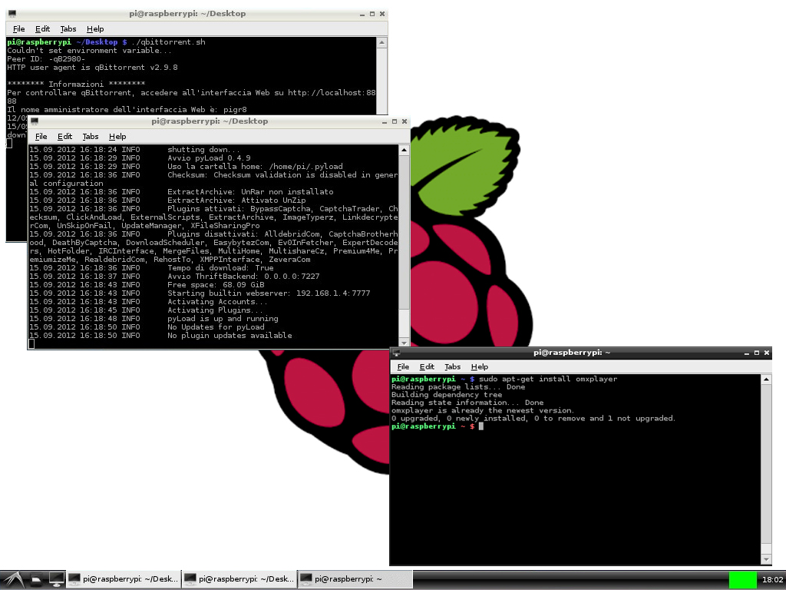

pdf pour impression #
Linux : première partie #
Réponses attendues à ce TP #
-
Vous allez compléter la section Liste des commandes rencontrées, en décrivant les actions des commandes listées. Chaque commande qui y figure est présentée dans le TP.
Ouvrez un fichier dans un éditeur de texte et remplissez le au fur et à mesure.
Exemple :
ls: liste les fichiers du dossier courantcd: change le dossier courant
Faîtes le au fur et à mesure sans quoi vous perdrez le fil.
- D’autres questions sont posées, ne portant pas sur des commandes. Vous devez y répondre après votre liste.
Introduction à Linux avec la clé USB Débian “Corsair” #
Linux est le noyau d’un système d’exploitation (OS) dont debian est une distribution.
- C’est un système d’exploitation libre dont il existe de nombreuses variantes fonctionnant elles-mêmes sur le noyau linux (ubuntu, centOS, archlinux, manjaro ).
- Linux est un dérivé d’UNIX, système crée dans les années 70, codé en langage C (crée à cette occasion). Ces deux “logiciels” : C et UNIX constituent à la fois le langage le plus important de l’histoire informatique (la majorité des langages actuels dérivent du C et la majorité des machines professionnellent tournent sur un dérivé d’UNIX).
- UNIX et ses dérivés sont présents partout : tous les smartphones fonctionnent sur un de ses dérivés (Linux pour android, bsd pour iOS) ainsi que les mac.
- On peut faire tourner un dérivé d’UNIX sur n’importe quelle machine : une caméra IP, par exemple, est généralement un ordinateur fonctionnant sur linux…
- Il existe des versions payantes de Linux (pour les professionnels), debian est un système d’exploitation gratuit et reconnu par les professionnels pour sa grande stabilité. Il n’est pas rare de rencontrer un serveur debian fonctionnant sans redémarrer depuis plusieurs années…
Debian Corsair
-
Est un projet d’un lycée de Dunkerque visant à enseigner Linux et pouvant fonctionner sur la majorité des ordinateurs.
-
Le système fonctionne en mode “live” (“vif” en français) c’est à dire sans être installé sur le disque de la machine. On boote sur la clé USB après avoir réglé son BIOS pour qu’il démarre depuis une clé USB. Et c’est tout ce qu’il y à faire.
Attention cependant, tout ce que vous écrivez sur la clé est conservé. Il faudra faire garde aux enregistrements, ils ne sont généralement pas écrits sur le disque dur de la machine hôte.
Usage courant de Linux
Ce TP vise à vous présenter l’envers du décor. C’est une formation d’informatique, pas une initiation à l’usage courant de Linux. Dans la vie de tous les jours, avoir un PC qui fonctionne sous Linux ne change presque rien… Tous les logiciels “modernes” ou presque sont présents et la seule “difficulté” vient d’essayer de jouer aux jeux-vidéos.
Maintenant c’est parti.
Avant de commencer : état de la machine. #
Pour accéder au système vous avez :
-
Éteint le PC.
-
Branché la clé USB, idéalement sur un port USB 3.0
-
Relancé le PC
-
CHEZ VOUS OUVERT LE BIOS (F2, DEL, F10 etc. C’est affiché sur l’écran de démarrage)
EN SALLE 213 Il suffit normalement d’appuyer sur F12 et de choisir “USB KEY (non UEFI)” Le “non UEFI” est important.
-
Changé la priorité de démarrage pour booter sur une clé USB. Le second choix doit être le disque dur local.
-
Enregistré ce réglage et redémarré.
-
Vous arrivé sur un bureau différent, sans devoir vous authentifier. Tout est bon !
Après ce TP. #
Chez vous seulement, en 213 il n’y a rien à faire.
- Éteindre le PC,
- Retourner dans le BIOS
- Changer l’ordre de démarrage : booter sur le disque dur en premier
- Enregistrer, redémarrer. Il doit booter sur l’ancien système.
Accéder à une machine #
On doit distinguer plusieurs manières d’accéder à une machine et de l’employer :
- Locale ou distante
- Graphique ou ligne de commande
Accès local #
C’est la situation courante : vous êtes devant un ordinateur qui est raccordé à un moniteur et dispose de périphériques (clavier, souris)
après l’avoir démarré vous avez, sur l’écran, son interface.
Accès distant #
La machine distante (serveur) est raccordée à un réseau dont votre machine (client) fait partie.
Vous êtes devant le client et accédez au serveur par le réseau.
On emploie de nombreux protocoles pour y parvenir, parmi lesquels SSH, RDP et VNC. À noter, il est possible d’utiliser un serveur dans le navigateur Chrome et d’y acccéder par ce même navigateur sur le client.
Bref, les solutions ne manquent pas.
Interface graphique (GUI) / Interface en ligne de commande (CLI) #
-
L’interface graphique, notée GUI (Graphical User Interface) est celle à laquelle vous êtes habitué : fenêtre, menus, clic clic clic…
-
L’interface en ligne de commande, notée CLI (Command Line Interface) parfois appelée shell, terminal ou tty est l’interace courante d’un serveur distant :
- on tape des commandes (READ),
- l’ordinateur évalue la réponse (EVAL),
- l’affiche (PRINT)
- recommence (LOOP)
(principe du REPL déjà évoqué).
Contrairement à ce qu’on pourrait croire, la plus puissante et pratique des manières d’utiliser un système UNIX est l’interface en ligne de commande.
Accès local et graphique #
Dans un premier temps nous allons travailler en mode “graphique”.
Vous devriez vite réaliser que ça ne change pas grand chose.
Nous allons faire un passage en revue des éléments importants d’un système UNIX.
Résumons :
- La machine : Raspberry pi ou votre ordinateur habituel
- Son système d’exploitation : Raspbian ou Debian.
Debian est un OS, basé sur LINUX. Linux n’est que le noyau (kernel) du système. Il vérifie les principes d’UNIX.
Debian ajoute de nombreux logiciels et outils et forme un système complet.
Quand c’est le cas et que le système est libre, on devrait employer le terme GNU/Linux
Graphiquement, Linux est très variable
Debian Corsair utilise le desktop environment Cinnamon.
Cela signifie qu’en remplaçant Cinnamon par un autre environnement de fenêtres on obtient des fenêtres totalement différentes… mais les logiciels ne changent pas. Seulement l’allure et le comportement des fenêtres. Bref, c’est pour le confort.
Gestionnaire de fichiers et arborescence #
A faire
-
Lancez le gestionnaire de fichier (icone Dossier Personnel).
-
Cliquez sur l’icône : “basculer le mode de navigation” :

La barre d’adresse change et on lit : /home/user
C’est votre dossier personnel.
La clé debian corsair étant configurée de manière identique pour tout le
monde, ce dossier porte le nom générique “user”. Généralement il porte
le nom de l’utilisateur courant : /home/quentin, par exemple.
- Cliquez maintenant sur le dossier système. Votre adresse est
maintenant
/.
L’arborescence d’un système UNIX débute à un dossier appelé racine et noté / Il contient tous les autres (en fait, tout le système).
-
Naviguer jusqu’au dossier
/home/useren tapant l’adresse dans la barre d’adresse. -
Revenez à la racine, dans le dossier
/
On y trouve différents dossiers :
bin boot dev etc home lib man media mnt
opt proc root run sbin srv sys usr var
Ce sont les mêmes dossiers dans tous les systèmes UNIX
Présentons rapidement ces dossiers
-
/bin: pour binaries (programmes compilés). Contient les programmes utilitaires courants (ls,cpetc.) -
/boot: contient les fichiers nécessaires au démarrage de la machine -
/dev: pour devices (appareil). Ce dossier contient les fichiers représentant les éléments matériels de la machine. Dans les systèmes UNIX chaque composant matériel est représenté par un fichier dans /dev. Par exemple, les disques de stockage sont dans /dev/sda, /dev/sdb etc. (Storage Device). Si un disque a plusieurs partitions, elles sont numérotées : /dev/sda1 etc. C’est un fonctionnement très différent de ce qu’on rencontre sous windows où fichiers, matériels et services sont séparés.Pour simplifier : UNIX voit tous les éléments matériels comme des fichiers
-
/etc: contient les fichiers de configurations des éléments principaux. Par exemple,/etc/wpa_supplicant/wpa_supplicant.confcontient les informations permettant de se connecter à un réseau Wi-Fi (SSID, type d’encryption, login, password). -
/home: contient les dossiers des utilisateurs. Chaque compte crée sur la machine se voit attribuer un dossier dans/home.Par exemple
/home/picontient les fichiers de l’utilisateur pi : ses documents et ses configurations persoL’administrateur d’une machine est l’utilisateur
root(racine) et il dispose de son propre dossier/root. -
/lib: pour libraries. Contient les librairies essentielles. Une librairie est un ensemble de programmes, de fichiers qui peuvent être utilisés par plusieurs programmes. Plutôt que de les intégrer dans chaque programme qui s’en sert, on les range dans une librairie. Sous windows les librairies sont généralement des fichiers*.dll -
/mediaet/mntsont les points de montage des partitions auxquelles on peut accéder de manière temporaire ou via le réseau. Prenons l’exemple d’une clé USB.Chaque disque de stockage est référencé par
/dev/sda, /dev/sdb, /dev/sdcetc.Quand on branche la clé, elle apparait d’abord dans /dev, par exemple en /dev/sdc. On ne peut malheureusement pas y accéder directement (ce ne sont que des 0 et 1).
Ensuite, selon la manière dont est configuré le système, il monte cette clé dans un dossier. Généralement on verra apparaître un dossier
/media/USBKEYet celui-ci apparaitra dans le gestionnaire de fichier avec une icone indiquant que c’est un disque qu’on peut retirer.Si vous cliquez sur l’icone “Ejecter”, le système va simplement démonter ce disque et effacer le dossier dans /media. Elle apparaît toujours dans /dev/sdc mais on ne peut plus y accéder dans l’explorateur de fichiers.
Tous les disques sont montés de façon similaire lorsque la machine démarre.
-
/opt: contient les programmes installés manuellement sur la machine. Tout ce qui n’est pas propre au système (mais est installé proprement) finit dans /opt -
/proc: les informations sur les processus. On a dit plus haut qu’un élément matériel pouvait être vu comme un fichier (dans /dev). Les programmes en cours d’exécution sont appellés processus et apparaissent dans /proc. Répétons donc :Pour simplifier : UNIX voit tous les processus comme des fichiers
-
/sbin: pour system binaries : les programmes permettant de lancer le système une fois le noyau lancé. -
/srv: les données des services. Souvent vide. -
/sys: encore un dossier similaire à /dev ou /proc. Celui là contient les informations relatives au matériel généralement plug and play et au système d’exploitation et au kernel (le noyau du système) lui même. -
/tmp: les fichiers temporaires. -
/usr: un dossier qui contient des sous dossiers non critiques. On y retrouve/usr/bin: exécutables moins importants,/usr/include: les entêtes des programmes C (#include stdio) qu’on retrouve au début des programmes en C etc. -
/var: un dossier pour les fichiers succeptibles de changer régulièrement, par exemple./var/log: les journaux enregistrant le déroulement des programmes/var/www: la racine d’un site web servi par le logiciel Apache etc.
Résumons :
- Votre système d’exploitation : debian “corsair”,
- Qui fonctionne sur un noyau Linux, dérivé d’UNIX.
- UNIX est utilisé partout. Toute machine (ou presque) qui n’est pas sous windows, tourne sous UNIX.
- L’arborescence d’un système UNIX représente tout le système (les disques, les fichiers, les processus etc.)
- Elle débute à
/(la racine) /home/quentinest mon dossier personnel/dev: dossiers des trucs “physiques”,/home: les utilisateurs.../bin/les exécutables./etcles réglages. Le reste n’est que “rarement” accédé directement par l’utilisateur.- L’utilisateur
rootest le “super utilisateur”. Il a son propre dossier personnel appelé/root
Une question importante maintenant :
Si UNIX est employé partout et comporte partout la même structure, comment partager une machine entre de multiples utilisateurs et les empécher de détruire accidentellement le système ?
Droits et permissions d’un fichier #
Les utilisateurs d’une machine UNIX n’ont pas tous les mêmes droits. Chaque fichier se voit attribuer un lot de règles qui définissent ces permissions.
- Rendez vous dans /etc et regardez les propriétés du fichier
/etc/debian_version(clic droit, propriétés, permissions).
Qui est le propriétaire ? Quel est le groupe d’utilisateurs à qui ce fichier appartient ?
On distingue ensuite trois accès possibles : Lire, Écrire, Exécuter
- Qui peut lire ce fichier ?
- Qui peut le modifier ?
- Qui peut l’exécuter ?
Exécuter signifie qu’on peut le lancer comme un programme et qu’il va réaliser quelque chose.
Ce principe est une grande force d’UNIX. Chaque utilisateur est limité
dans ses pouvoirs. Seul le super utilisateur root peut accéder et
modifier tous les fichiers. C’est la raison pour laquelle on n’utilise
que très rarement l’utilisateur root : une erreur est vite arrivée.

- Rendez-vous dans
/home/user
Ouvrez les propriétés d’une des images présentes dans le dossier.
Comparez avec les permissions du fichier précédent. À qui appartient ce fichier ? Quelles permissions pouvez-vous modifier ?
- Pour s’assurer que vous avez bien compris : localiser l’exécutable
ls. Il est dans/bin. C’est un programme d’usage courant, peut-être la commande qu’on tape le plus souvant.ls(list) renvoie la liste des éléments d’un dossier.
Selon vous, qui en est le propriétaire ? Qui peut le lire ? Qui peut le modifier ? Qui peut l’exécuter ?
Vérifier sur le fichier lui même.
Terminal #
Nous allons maintenant découvrir le terminal.
Le terminal est l’outil le plus puissant d’UNIX et l’objectif de ce premier TP est de vous familiariser à son emploi.
Cela ne fonctionnera que si vous prenez le temps de travailler directement dans la console. Les commandes sont simples mais difficiles à retenir si vous ne les utilisez jamais…
Ouvrez un terminal (icone noire avec >_).


Vous êtes accueilli par un prompt ($) qui vous indique où écrire.
Chaque commande est exécutée par entrée et son résultat s’affiche à la suite. UNIX remonte aux années ~60 et, à cette époque, l’espace mémoire était très onéreux. Les commandes sont donc COURTES. Les plus courantes font 2 lettres.
Commençons par les deux plus importantes.
Obtenir de l’aide avec --help et man #
Le shell, n’est pas crée pour un enfant de 4 ans comme l’interface de windows. Il suppose déjà une certaine familiarité avec l’informatique.
En particulier, tout est décrit en détail, il ne faut pas avoir peur de lire ni de se tromper (en étant prudent). Il faut TOUJOURS lire les sorties, en particulier quand elles contiennent une erreur.
$ ls --help
$ man ls
Pourquoi le $ ? Il indique qu’on est devant une commande système, à
exécuter dans un terminal. C’est le même principe que d’indiquer >>>
avant une commande Python. On préciser au lecteur où travailler.
Et donc, que doit-on faire pour obtenir l’aide de ls ?
- Ouvrir un terminal
- taper
ls --helppuis ENTRÉE
Remarque : on dit que --help est un paramètre de la commande ls.
Les commandes UNIX acceptent généralement le paramètre -h ou --help.
Dans toute la suite du TP, pour chaque nouvelle commande, vous lirez d’abord l’aide rapide, avec --help puis survolerez le manuel avec man #
C’est un reflexe à adopter avant toute utilisation d’une nouvelle commande. Si vous voulez apprendre, il faut déjà comprendre ce qu’il est possible de faire.
Naviguer dans la console #
Lister les documents avec ls : list #
-
La première commande
$ ls --helpvous affiche un résumé de l’aide de la commandels. -
La seconde (
$ man ls) affiche le manuel dels. On quitte une page de documentation avec le raccourci clavierq.L’équivalent sous DOS (cmd de windows) de
$ lsestdir
Lister les dossiers du dossier racine avec $ ls / Liste les fichiers,
y compris ceux qui sont cachés et afficher une liste avec des nombres
qu’on comprend avec $ ls -lah ~
- La syntaxe d’une commande bash. Elle se généralement présente ainsi
$ commande -parametres dossiers/fichiers
Par exemple : $ ls -lah /home/pi
- La commande est
ls - Les paramètres sont
-lah: l présenter une liste détaillée, a tous les fichiers, y compris ceux cachés, h lisible par un humain - Le dossier est
/home/pi
Cette commande liste donc les fichiers, y compris ceux cachés du dossier
/home/pi
Se déplacer avec cd : change directory, se repérer avec pwd
#
pwd affiche le dossier courant, cd permet de se déplacer
$ cd /home/pi
$ cd /
$ cd ~
$ cd ..
$ cd ../bin
$ cd -
Tester ces différentes commandes. Quel est le dossier dont le nom résumé
est ~ ?
Le shell de linux utilise un interpréteur en ligne de commande appellé BASH. Il en existe d’autre (zsh etc.) mais BASH est le plus courant.
Dans bash on peut tout programmer : exécuter des scripts qui nettoient vos dossiers, se connecter à tel site et le télecharger en entier, savoir quels sont les processus qui tournent et consomment le plus de mémoire. On peut absolument TOUT faire dans bash.
Les commandes les plus délicates (ie. qui modifient le système) sont
réservées à l’utilisateur root ou à un groupe d’utilisateurs
bénéficiant des mêmes droits (sudo).
Nous allons maintenant créer des dossiers, des fichiers et les effacer.
Deux dossiers particuliers de l’arborescence UNIX
Dans chaque dossier on trouve un lien vers deux dossiers particuliers :
..remonte d’un dossier dans l’arborescence. Si je suis dans/home/useralorscd ..m’envoie dans dans/home.désigne le dossier courant. Donc exécutercd .ne fait rien. Présenté comme cela c’est inutile ! On emploie cependantcd .pour mettre à jour des variables d’environnement. Nous en reparlerons plus tard…- Raccourcis. Le dossier de l’utilisateur est raccourci en
~par bash. Si vous changez d’utilisateur (ce qui arrive régulièrement quand on installe un système, par exemple) vous pouvez vous repérer facilement.
Résumé : navigation
ls /home/user: liste les fichiers du dossier/home/usercd /: me déplace vers/pwd: affiche le dossier courant (pour savoir où on est)..désigne le dossier parent,.désigne le dossier courant et~est le dossier personnel de l’utilisateur courant.
Modifier des fichiers dans la console #
Créer un dossier avec mkdir, créer un fichier vide avec touch
#
La commande permettant de créer un dossier est mkdir (make directory).
Pour créer un fichier vide on emploie touch.
Créer les dossiers
/home/user/essai
/home/user/bonjour
/home/user/bonjour/raymond
Dans le dossier raymond créer le fichier recette.txt. Créer ensuite
les fichiers telephone.txt et adresse.txt avec la commande
touch telephone.txt etc.
Éditer un texte avec nano (éditeur minimaliste) #
Il existe de nombreux éditeurs de texte en ligne de commande. Les plus
connus sont vi et emacs.
Nous n’utiliserons aucun des deux.
viest très puissant (truc de fou) mais dispose de raccourcis claviers qui prendraient 3 heures à exposer. Retenez cependant que pour quitterviil faut taper les touches:q ENTREEemacsest très puissant, moins effayant mais finit par ressembler à une usine à gaz : emacs fait tout, y compris le café.
Nous nous contenterons de nano

On reconnait nano à la barre du haut et aux raccourcis claviers du
bas.
Le symbole ^ désigne la touche CTRL ou CMD sous mac. Donc CTRL + X
permet de quitter nano.
Vous allez donc éditer votre recette avec
$ nano /home/user/bonjour/raymond/recette.txt
Utiliser l’autocomplétion (tab) pour éviter de taper les noms complets.
par exemple, nano /home/user/bon TAB va compléter jusque /bonjour.
Dans nano il n’y a que 2 raccourcis à connaitre :
- ctrl + C s’il vous affiche des messages bizarres.
- ctrl + X pour quitter. ctrl + X, oui : enregistre (yes si linux est en anglais), ctrl + X, non : n’enregistre pas.
Vous apprendrez les autres si nécessaire (Je sais aussi rechercher du texte avec ctrl + w, le reste m’est inutile.
Ajoutez votre recette préférée et enregistrez la.
Copier avec cp, déplacer/renommer avec mv #
cp permet de copier un fichier vers une autre destination.
Rendez vous dans le dossier /home/user/bonjour
Copier votre recette dans le même dossier sous le nom recette2.txt
$ cp recette.txt recette2.txt
mv permet de déplacer un fichier et donc, indirectement, de le renommer.
Renommer votre seconde recette en recette3.txt
$ mv recette2.txt recette3.txt
La copie de votre recette s’appelle maintenant recette3.txt
Vérifiez avec ls que tout va bien.
Effacer des fichiers, des dossiers avec rm #
Pour effacer un fichier, on utilse rm (remove)

Attention, il n’y a AUCUNE CONFIRMATION dans UNIX.
-
Si vous effacez n’importe quoi et plantez le système, il faut tout réinstaller.
-
Et vous avez immédiatement 0 au TP.
-
Ainsi que deux heures durant lesquelles vous viendrez refaire des clés usb :)
Si vous êtes dans le dossier /raymond,
$ rm recette.txt
va effacer votre fichier. Sinon, il faut spécifier l’adresse complète :
$ rm /home/pi/bonjour/raymond/recette.txt
Pour effacer tous les éléments d’un dossier courant, on peut utiliser
un “joker” : * (=n’importe quoi)
Par exemple, depuis /raymond, $ rm *.txt efface tous les fichiers qui
se terminent par .txt
Pour effacer un dossier on peut utiliser rm -rf nom_du_dossier. Par
exemple …./raymond et tout ce qu’il contient :
- L’option
rderm: récursive, pour parcourir récursivement jusqu’à épuisement - L’option
fderm: “force” : efface sans rien demander.
Donc rm -rf /home/user/bonjour efface tous les dossiers et leurs
contenus à partir de bonjour, inclu.
$ rm -rf /home/pi/bonjour/raymond
On peut aussi utiliser rmdir pour effacer des dossiers mais personne ne s’en sert.
Quelques commandes pratiques : #
- clear : vider la console (en fait descendre de quelques lignes)
- cat : afficher le contenu d’un fichier. Ce n’est pas
exactement ce que fait
catmais pour l’instant, vous pouvez le comprendre ainsi. Testez$ cat /home/user/bonjour/recette.txt - tail : afficher la fin d’un fichier. Par exemple un journal
d’enregistrement qui pèse 20 mo mais dont seule la fin vous
intéresse. En particulier,
tail -f nomdufichierpermet à l’affichage d’être mis à jour si le fichier est édité. - top : affiche la liste des programmes qui tournent sur la machine et permet de trier, comme dans le gestionnaire de tâches, selon le processeur, la mémoire etc. Taper q pour quitter.
- less : affiche un contenu en mode “paginé”. Si une commande renvoie 200 pages de texte, less permet de n’afficher qu’une page à la fois.
- uptime : depuis combien de temps tourne la machine ? Quelle est sa “charge” moyenne ?
- whoami : qui est l’utilisateur courant ?
- w : “Who ? What ?” Qui est connecté, que fait-il ?

D’autres commandes qu’on utilise parfois : #
Que font les commandes date, cal, du, df, which et who ?
Je rappelle aux impatients qu’il faut remplir au fur et à mesure la liste des commandes.
Connaître les processus avec ps, arrêter un processus avec kill, filtrer avec grep
#
Nous allons apprendre tout ça en même temps. Avant de se lancer, il faut que vous connaissiez deux notions
- Entrée et sortie standard
- Tuyautage (pipe) des commandes
Ce qui a fait le succès d’UNIX est la possibilité d’enchainer des programmes très simples pour faire faire des choses très évoluées.
Par exemple, on peut, en quelques caractères savoir quels sont les scripts Python qui tournent et ensuite en une ligne les tuer.
Quand on sépare deux commandes par un pipe | (alt-gr + 6), la sortie
standard de l’une est envoyée dans l’entrée standard de l’autre.
Quand on sépare une commande et un fichier de >>, le résultat de la
commande est ajoutée à la fin du fichier.
Essayons.
psrenvoie la liste des processus qui tournent sur le machine.ps -efest ce qu’on emploie souvent. Essayez.
Problème ? Ca prend des pages !
-
Première solution : | more ou | less. Je n’entrerai pas dans les nuances (less est mieux que more), mais testez
ps -ef | moreetps -ef | less(quitter avec q, naviguer avec les touches habituelles) -
grep permet de filtrer un résultat.
Donc, ps -ef | grep root va afficher tous les programmes qui tournent
et font apparaître le mot root quelque part.
-
Créer un fichier vide processus.txt et y écrire tous les processus tournant actuellement sur la machine contenant le mot
/bin/ -
Nous allons créer un problème parfois difficile à résoudre… et le résoudre rapidement.
- Créer un fichier vide
boucle.py - avec
nanoéditer ce fichier et y ajouter une boucle infinie :
from time import sleep while True: sleep(10) print("robert le hardi")Enregistrer et quitter (Ctrl + x, oui)
- Créer un fichier vide
-
Exécuter
python boucle.pyet votre programme tourne indéfiniment. Pour l’arrêter c’est facile : ctrl + c -
Imaginons maintenant que vous n’ayez pas la main sur le programme ! Il tourne en arrière plan et ne pouvez faire ctrl + c…
Relancer la boucle infinie et ouvrir un deuxième terminal.
-
Dans le premier terminal, lancer le programme et laisser le programme tourner. À partir de maintenant, vous ne toucherez plus à ce terminal. Nous allons tuer le programme en 2 commandes depuis un autre terminal.
-
Dans le second terminal, filtrer, parmi les processus en cours, les scripts python : ~~~ $ ps -ef | grep python ~~~ Parmi les résultats vous devriez voir votre programme. Repérez le numéro qui apparaît juste après votre nom d’utilisateur
Exemple : ~~~ pi 838 839 0 14:21 ? 00:00:11 python boucle.py ~~~
C’est le PID de votre processus (process identifier). Chez moi 838. Vous pouvez alors, depuis le second terminal, tuer votre programme avec
$ kill 838Je précise à Einstein qu’il faut remplacer 838 par le numéro affiché sur son écran, que je ne peux deviner.
Vous devriez avoir une confirmation du style
[1]+ Terminated python boucle.pyet voir votre programme s’arrêter dans le premier terminal.Si jamais un programme résiste, vous pouvez insister avec kill -9 (à éviter pour beaucoup de raisons que je n’aborderai pas) ou, si vous n’avez pas les droits, essayer un sudo kill …
Consulter l’état du réseau avec ip a, ifconfig et ping #
-
Pour obtenir les informations réseau d’une machine, il existe de nombreuses commandes. La plus courante est ifconfig mais elle est dépréciée ; cela signifie qu’elle finira par ne plus être installée.
On privilégie donc ip a. Essayez et trouvez l’adresse ip et l’adresse mac de votre raspberry
-
Pour vérifier si on peut communiquer avec une machine on utilise
ping. Ping permet de savoir si la machine et joignable et combien de temps mettent les paquets à faire un aller-retour. Le moyen le plus rapide de tester la connection à internet est de faire un ping à google avec :
<!-- -->
$ ping google.com
Utilisez le raccourci clavier ctrl + c pour l'arrêter.
Installer des programmes, des paquets, des librairies python #
Les distributions linux comportent généralement un gestionnaire de paquets.
C’est une suite de programme qui permet d’installer, desinstaller, configurer des programmes automatiquement.
Les variantes de débian en comportent 3 qui sont complémentaires : dpkg, apt et aptitude.
Trois ? Oui, car elles ne jouent pas le même rôle.
-
dpkg est à privilégier quand on doit installer et manipuler à la main. Elle ne fait rien d’autre que ce que vous lui demandez et installe ce qui est précisé, desinstalle exactement ce que vous demandez et voilà. On l’emploie quand on ne peut faire autrement.
-
apt et aptitude sont rivales (oui, oui les développeurs se battent pour proposer les meilleurs outils possibles)
En 2019, apt a repris l’ascendant sur aptitude (c’est pas moi qui le dis, perso je m’en moque). On installe donc un programme avec
$ sudo apt-get install nomduprogramme
Et il s’installe tout seul, précédé de toutes ses dépendances.
On desinstalle et nettoie avec
$ sudo apt-get purge nomduprogramme
$ sudo apt-get autoclean
Le principe d’un gestionnaire de paquet est de garder, sur la machine, une liste des fichiers qu’on peut installer via ces commandes.
On met cette liste à jour avec
$ sudo apt-get update
Pour chercher si un programme existe (ou retrouver son nom précis, ou trouver tous les jeux de poker) on peut chercher :
$ apt-cache search tetris
$ apt-get install tint
tint étant le dernier nom de la liste :)
Avouez que ça change quand même de windows où :
- chaque installation demande de passer par google
- il faut naviguer sur un site à la noix avec des pubs, des faux liens et que sais-je encore
- d’installer à la main… pour s’apercevoir qu’il manque un fichier… qu’on doit trouver et installer…
- de desinstaller à la main ou via les menus qui échouent souvent etc.
Deux lignes viennent remplacer tout ce bidule.
Plusieurs inconvenients aux gestionnaires de paquets :
- Il n’y a pas tout
- Il faut parfois ajouter les sources à la main
- Chaque distribution a son propre gestionnaire (pacman dans archlinux par exemple)
- Quand ça échoue ça peut s’avérer complexe
Pour les librairies python on utilise pip (Package Installer for Python) qui fait la même chose :
D’abord on install pip :
$ sudo apt-get install python-pip
Ensuite on peut installer des librairies :
$ sudo pip install pygame
On teste que tout va bien :
$ python3
Python 3.7.4 (default, Oct 4 2019, 06:57:26)
[GCC 9.2.0] on linux
Type "help", "copyright", "credits" or "license" for more information.
>>> import pygame
pygame 1.9.4
Hello from the pygame community. https://www.pygame.org/contribute.html
Et pour désinstaller :
$ sudo pip uninstall pygame
Si vous voulez un truc pour Python 3 en particulier, utiliser pip3. Et voilà.
Je ne m’étendrai pas sur git qui vous permettra, au passage, de
télécharger les codes sources de programmes et permet de contribuer à un
projet sur GitHub mais vous devriez commencer à comprendre :
Sous linux, il est rare (mais ça arrive) qu’on doive installer à la main. On préfère laisser un gestionnaire de paquets s’en charger.
Toutes les distributions “avancées” ont un client graphique pour leur gestionnaire de paquet.
En pratique, sur un poste personnel qu’on utilise couramment, il est commode de l’employer. Pour configurer un serveur, c’est parfois impossible.
Droits d’utilisation : les permissions #
Nous avons vu plus tôt que chaque fichier comporte des droits d’utilisation dont le nom précis est permissions.
Je ne vous ferai pas entrer dans les subtilités mais seulement efleurer le concept.
L’intérêt est double
-
la sécurité.
-
multi utilisateur : partager les ressoruces.
1. La sécurité #
Un programme qui tourne sur la machine, même lancé par le super utilisateur root ne peut faire que ce à quoi il est autorisé. Ainsi, si un utilisateur standard installe par mégarde un programme malveillant, celui-ci sera vite limité dans son pouvoir de nuisance. Raison pour laquelle on rencontre beaucoup moins de virus sous Linux que sous windows.
C’est ce principe qui permet d’avoir 1500 utilisateurs sur une énorme machine en même temps, comme dans les universités. Ils ne peuvent pas détruire grand chose.
Presque aucun utilisateur (même les gens paranos) n’installe d’antivirus sous linux.
Attention cependant. Si vous avez plusieurs boots sur une même machine (linux + windows), un antivirus sous linux permettra de repérer facilement des virus sous windows…
2. multi utilisateur #
En donnant automatiquement des droits à chaque utilisateur on s’assure que la machine est utilisable simplement. Ajouter un nouvel utilisateur est facile et celui-ci ne peut faire n’importe quoi sur la machine. Il ne peut accéder aux fichiers personnels d’un autre utilisateur, il ne peut effacer les fichiers systèmes.
Revenons à nos moutons : les permissions #
$ cd /etc
$ ls -l
Et vous avez, à gauche les droits de chaque fichier et dossier.
Par exemple : drwxr-xr-x ou -rw-rw-rw-
-
On sépare en 4 morceaux ce code :
La première lettre est
dou-: dossier ou nonEnsuite par paquet de trois : rwx ou des -
Par exemple r-x ou --x etc.
Chaque fois qu’une lettre apparait, l’utilisateur PEUT le faire. Chaque fois qu’un tiret apparait, il ne peut pas.
rwx : il peut lire, écrire, exécuter. (Read, Write, eXecute)
r-x : il peut lire et exécuter, pas écrire etc.
-
Il y a 3 paquets, ce sont les droits du propriétaire, du groupe et des autres.
En détail pour le premier résultat dont les droits sont drwxr-xr-x
- d : C’est un dossier
- rwx : le propriétaire peut lire, écrire, exécuter
- r-x : le groupe peut lire et exécuter
- r-x : les autres aussi.
Et voilà.
Recommençons à examiner les résultats de ls -l
Cette fois regardons les colonnes 3 et 4. Imaginons trouver
-rw-r--r-- 1 vivek webusers 14814 2006-07-26 13:25 working-nixcraft.txt
vivek est le propriétaire du fichier
webusers est un groupe
La première série de trois lettres (apres d) pour vivek, la seconde pour webusers.
Quelques bricoles à connaître :
- root peut tout faire. Ne donnez pas le mdp
rootd’une machine à quelqu’un. - On peut “passer root” avec
susuivi du mdp root. La console fait alors apparaître le prompt #. su piouexitpour revenir à l’utilisateur pi. La console fait alors apparaître le prompt $.sudo nomdecommandepermet d’exécuter une commande en mode root (si l’utilisateur fait partie du groupe sudo) Le mdp à taper est celui de l’utilisateur, pas celui de root.- Les utilisateurs sont référencés dans /etc/passwd
- Les mot de passes sont dans /etc/shadow (depuis des années ils sont hashés, vous ne pouvez pas donc vous en servir)
- Les groupes sont dans /etc/group
- On change le propriétaire d’un fichier avec
chown tony bonjour.txt: tony devient propriétaire du fichier bonjour.txt - On change le groupe d’un fichier avec
chown tony:ftpusers bonjour.txt: le fichier appartient au groupe ftpusers - On change les permissions d’un fichier avec
chmod 764 nomdefichier
Changer les permissions avec chmod #
Le principe est celui d’utiliser une base octale… et surtout de donner la somme des droits par utilisateur
-
1er chiffre : le propriétaire
-
2nd chiffre : le groupe
-
3eme chiffre : les autres
On ajoute les trois chiffres.
retenons :
- r (Read) : 4
- w (Write) : 2
- x (eXecute) : 1
- refuser un droit : 0
Tous les droits : 4 + 2 + 1 = 7
Donner tous les droits à tlm : chmod 777 bonjour.txt
Pour seulement lire et exécuter : 4 + 0 + 1 = 5.
Le propriétaire peut tout faire, le groupe lire et exécuter et les
autres rien : chmod 750 bonjour.txt
Et inversement, quels seront les droits du fichier après cette commande :
$ chmod 745 bonjour.txt
Accès distant en mode texte avec ssh #
Remarque avant de se lancer
Cette partie est plus difficile à mettre en oeuvre sur votre PC que sur un raspberry.
-
Si vous êtes sous Debian Corsair (avec votre PC), on laisse tomber pour l’instant.
-
Si vous êtes devant un Raspberry Pi, on va essayer !
ssh pour Secured SHell est une commande permettant d’accéder à un
terminal sur une machine distante.
Deux prérequis : l’adresse ip de la machine distante et que ssh soit en écoute.
Remarque préliminaire #
SSH est, comme tout programme écoutant sur le réseau, un danger pour la sécurité de votre machine. Si vous achetez un rapsberry ou installez linux, ssh est désactivé par défaut. Une fois activé, assurez-vous d’avoir un mot de passe fort.
Il est très simple de scanner les ports et d’entrer discrètement sur
une machine et la combinaison pi raspberry est testée par tous les
scripts cherchant à pénetrer automatiquement un réseau…
Donc, j’insiste parce que vraiment !!! Si vous achetez un raspberry et commencez à bidouiller, la première chose à faire et de change le mot de passe par défaut !!!
ssh depuis windows avec putty #
Il est possible d’utiliser la console bash ou powershell mais putty reste couramment employé.
Dans Putty, saisir l’ip du raspberry, assurez vous d’être en ssh et se connecter avec Open.

Un terminal s’ouvre, tapez les identifiants habituels. Et voilà, vous avez le contrôle de votre machine.
Si vous avez vraiment du mal avec les ordinateurs. Mettez vos écouteurs d’abord. Le type a 8 ans et il y parvient donc je pense que c’est à votre portée :).
Quelques détails sur Putty, qui est plus puissant qu’il n’en a l’air.
ssh sous UNIX ou via powershell, bash @ windows etc. #
La commande est simplement : ssh pi@192.168.0.15 si c’est votre nom
d’utilisateur et adresse ip. Il ne reste plus qu’à taper le mot de
passe.
Je n’entre pas dans les détails mais il est possible d’établir une clé permettant d’authentifier une machine. On dispose alors d’un terminal permettant d’éviter de brancher clavier, souris, écran sur la machine.
Déplacer un fichier avec filezilla #
Filezilla est un client FTP (File Transfer Protocol) libre et disponible sur toutes les plateformes.
Pour copier un fichier sur une machine distante, mille méthodes existent. La plus simple reste d’utiliser un client ftp car linux propose facilement un serveur ftp avec ssh.
Dans filezilla, par exemple on choisit sftp (s pour secured) car c’est une connexion à travers un tunnel ssh.
Remarque en pratique les vrais de vrais font en une ligne la copie
d’un fichier avec scp (secure copy)
$ scp ~/monscript.py pi@192.168.0.15:/home/pi/mes_sources/
et son exécution avec ssh :
$ ssh pi@192.168.0.15 python ~/mes_sources/monscript.py
ce qui, une fois tapé les commandes pour la première fois, permet d’aller très vite.
Accès graphique avec VNC #
VNC, RDP etc. permettent d’ouvrir une fenêtre GUI sur la machine distante. On dispose alors de l’environnement fenétré habituel. Ne revez pas, ça rame presque toujours.
Il faut : un serveur vnc sur l’hôte, un client vnc de l’autre côté. Je ne vois pas vraiment l’intérêt pour nous, mais vous savez que ça existe.

RQ. Cela peut être très pratique pour administrer un PC windows à distance. Depuis chez vous (client) vers chez un parent peu versé dans l’informatique (serveur) vous pouvez alors résoudre ses problèmes. C’est amusant, la première fois.
Un tutoriel trouvé en 4 secondes et que je n’ai pas lu
Et je pense qu’on a enfin fait le tour des fonctions de base d’un terminal UNIX.
Je vous passe tout le reste mais retenez :
- on peut TOUT faire dans un terminal. C’est généralement plus rapide, dès qu’on sait ce qu’on fait.
- L’aide est votre amie. Lisez là.
- Si vous ne trouvez pas, demandez à google. Les développeurs plus agés ont appris comme vous et répondu à toutes les questions simples ainsi qu’à la majorité des questions élaborées.
- N’hésitez pas à poser des questions sur internet. Commencez par chercher la réponse d’abord sous peine de vous faire envoyer paitre.
Vos réponses :
RÉPONSES Liste des commandes rencontrées : #
Naviguer #
ls: liste les fichiers du dossier courantls -lah: affiche aussi les fichiers cachés, avec les détails et les tailles dans des unités compréhensiblescd:pwd:
Créer, effacer #
cp:mv:touch:mkdir:rm:
Utilitaires #
clear:cat:top:less:
Processus #
ps:ps -efgrepps -ef | grep bidulekill:
Réseau et accès distant #
ip a:ping:ssh:ssh pi@192.168.1.1:
Permissions, utilisateurs #
chmod:chmod +x:chmod 755:su:sudo commande:chown:
La suite est pour vous :)
Ici s’arrête la première partie du TP Linux.
La suite concerne les processus, les entrées / sorties et les redirections.
Linux, deuxième partie. Compléments #
Processus #
Qu’est ce qu’un processus ?
Reprenons :
-
un programme n’est que du texte. Par exemple un script python ou un fichier compilé comme celui qui se trouve dans
/usr/bin/lsFaîtes
$ cat /usr/bin/lspour vous en convaincre. -
un processus est un programme en cours d’exécution. A tout moment, votre machine fait tourner plusieurs centaines de processus. Même s’il ne se passe rien. On en obtient la liste avec la commande
$ ps -
Qui fait “tourner” ces processus ? le processeur de votre machine. C’est une ressource d’un processus. Comme le sont les données, par exemple.
Cet ensemble de processus est administré par le système d’exploitation.
Processus parent #
Boot #
Lors du démarrage de votre machine, des programmes “noyaux” (kernel) sont exécutés. Ce sont eux qui font le lien entre les éléments matériels de la machine. Par exemple ils détectent votre carte graphique et lui envoient des informations à afficher. Ils détectent aussi les disques présents dans la machine, les périphériques (clavier, souris, écran etc.) et chargent les bons pilotes.
init #
Jusque là, aucun processus ne tourne encore. Le premier processus lancé est init. Il est le processus parent de tous les autres.
Dans les machines récentes, init est remplacé par systemd mais cela n’a guère d’importance pour nous. Que font init et systemd ?
Ils lancent chacun des processus suivants. Tous les processus tournant sur votre machine ont pour ancetre init ou systemd.
La commande $ pstree affiche l’arborescence des processus qui
tournent actuellement.
Executer la commande $ pstree | less
Faîtes q pour quitter ou page-down pour avancer d’une page.
Remarquons qu’elle n’affiche pas tout, seulement les branches les plus hautes de l’arbre. On remarque aussi que certains processus sont lancés plusieurs fois.
multitâche #
Même si nos ordinateurs disposent de plusieurs coeurs de processeurs (intel vend un processeur Xenon a 32 coeurs, par exemple), ce n’est pas vraiment ce qui rend nos systèmes multitâches.
Multitâche : cela signifie qu’on peut réaliser plusieurs actions en même temps. Comme rafraîchir une page web tout en formattant une carte SD.
En pratique, notre système d’exploitation décide de la cadence à suivre. Il commande le processeur et lui fait réaliser les actions de certains processus dans un certain ordre. On parle d’ordonnancement des processus.
Admettons que trois processus soient lancés process1, process2 et process3.
- process1 nécessite l’accès à un fichier local sur le disque dur (opération lente), 3 millions de cycles de calcul qui utilisent 200 mo de RAM, et un affichage dans la console
- process2 nécessite 1 million de cycles de calcul, l’accès à une ressource distante sur le réseau, 300 mo de RAM et écrit ensuite son résultat dans un fichier local
- process3 nécessite 5 millions de cycle de calcul, 100 mo de RAM et affiche son résultat dans la console.
- L’ordonnancement de ces processus peut se faire de différentes manières
- chacun sur un fil d’exécution séparé et en même temps (parallèle) et sur des coeurs de processeurs différents, les unes apres les autres (séquentielle) ou en utilisant de manière régulière le même coeur de processeur.
La durée d’exécution totale peut varier considérablement, l’usage de la mémoire aussi.
Par exemple, en cas d’ordonnancement en parallèle, la mémoire utilisée est 600 mo = 200 + 300 + 100. En séquentiel, une fois que le premier processus a terminé, sa mémoire est libérée, on n’utilisera jamais plus de 300 mo,
Selon l’usage de machine (un serveur avec des centaines d’utilisateurs ? un super calculateur réservé pour une durée spécifique ? un PC gaming ?) l’ordonnancement sera différent.
Dans le premier cas on va chercher à équilibrer les ressources entre les utilisateurs. Si François lance un gros calcul, il ne faut pas que Pierre se retrouve devant une machine totalement figée.
Dans le second cas, on va optimiser la charge du processeur. Inutile de dépenser une fortune pour alimenter et refroidir un super calculateur pour qu’il attende qu’un utilisateur appuie sur ENTREE !
Dans le troisième cas, certains processus (par exemple le moteur du jeu vidéo) seront prioritaires (ou devraient l’être).
Un exemple vaguement détaillé #
Imaginons une situation courante. Je souhaite reprendre mon travail de recherche sur le web portant sur les processus. J’ai éteint mon PC hier soir après avoir fermé l’onglet de cette page et un onglet avec un webmail dans chrome.
- Je démarre la machine. Mon bios (petit programme présent sur la carte mère) se lance et, d’après sa configuration, décide de booter sur le disque dur SSD Samsung EVO 256 go.
- Le bios détecte le boot loader GRUB sur ce disque et l’exécute.
- GRUB détecte une partition linux bootable contenant une distribution Debian. Il repère aussi, sur un autre disque, une partition windows. Il me propose alors de choisir.
- Je choisis de booter sous linux. Il lance alors le démarrage de ce système.
- Le noyau linux est exécuté et détecte les éléments matériels (disques, cartes, périphériques etc.), charge les pilotes et, si tout va bien, lance init (ou systemd)
- Le premier processus est lancé (init ou systemd) il suit alors un fichier de configuration qui lui indique quels processus lancer (par exemple un gestionnaire de fenêtre et un serveur graphique pour avoir des menus) mais certainement une centaine d’autres (bluetooth, gestionnaire d’imprimantes, gestionnaire de réseau etc.). Je vois apparaitre un menu me proposant de m’identifier.
- Je m’identifie sur la machine. D’autres processus sont lancés (affichage de mon fond d’écran etc.). Après quelques secondes, je peux lancer les programmes présents sur ma machine.
- Je lance Chrome qui m’affiche une fenêtre me proposant de réouvrir les onglets fermés la veille. Enfin ! (cela m’a pris 30 secondes, c’était très long…). J’accepte.
- Chrome lance alors 2 autres versions de lui même, filles de la première, m’affichant toutes les pages.
- Ces deux onglets se chargent “en même temps.” En pratique, ils se lancent étape par étape et cette simultanéité n’est qu’une illusion.
- Une erreur survient dans chrome, tous mes onglets sont plantés ! La fenêtre se fige et je ne peux plus cliquer nulle part ! Quel est, selon toute vraisemblance, le processus fautif ? De toute évidence, le processus Chrome parent de tous les autres ou alors un processus parent de chrome. Vous pouvez vérifier, chrome est lancé par systemd lui même.
- J’ouvre un terminal (encore un processus…) et avec killall chrome j’arrête tous les processus chrome en une fois. systemd m’obéit fidélement et tue les processus s’appelant Chrome. La fenêtre se ferme et je peux recommencer.
Tuer, à l’ancienne, un processus défectueux. #
Reprenons un exercice déjà vu dans le premier TP.
Voici un script Python qui ne fait pas grand chose mais tourne indéfiniment.
#!/usr/bin/env python
from time import sleep
while True:
print("Tu es comme le H de Hawaii")
print("Tu sers à rien")
sleep(10)
Remarquez bien la première ligne. Elle indique au shell quel programme employer pour exécuter ce fichier source.
- Créer un fichier appelé
hawaii.pycontenant ce bel extrait de code dans votre dossier utilisateur (dont les raccourci est~) :
<!-- -->
cd
nano hawaii.py
Coller le code avec MaJ + inser (ou un clic sur la molette)
Ensuite, CTRL + X, oui (ou yes, c’est selon…) Entrée.
- Lui donner les droits d’exécution :
$ chmod +x hawaii.py - Exécuter le script avec :
<!-- -->
$ ./hawaii.py
Il n’est pas utile de préciser qui appelle le fichier, le shell va trouver tout seul en lisant la première ligne du code.
Pour l’arrêter normalement, il suffit de faire “CTRL + C”… mais laissez le tourner.
- Ouvrir un autre terminal et vérifier qu’un processus Python tourne bien :
<!-- -->
$ ps - ef | grep Python
Voici un exemple de sortie pour cette commande :
pi 2272 2255 0 oct.15 pts/2 00:00:49 /usr/bin/python /home/pi/hawaii.py
Revenons en détail sur la sortie de ps -f
$ ps -f
UID PID PPID C STIME TTY TIME CMD
quentin 15769 3826 0 10:15 pts/0 00:00:00 bash
quentin 17689 15769 0 10:43 pts/0 00:00:00 ps -f
ps -f affiche les infos des processus tournant dans la session
courante (le terminal). Donc il en trouve deux : bash qui est le
terminal et … lui même !
Repérer les trois premières informations :
- UID nom de l’utilisateur qui a lancé le process : quentin
- PID correspond au numéro du processus : 15769
- PPID correspond au numéro du processus parent : 3826
Recommencer avec $ ps -ef | grep python
On cherche cette fois tous les processus tournant en ce moment et on
n’affiche que les lignes contenant le mot python
- Quel est le PID du script hawaii ?
- Et celui du parent ?
- Pourquoi voit-on toujours une ligne supplémentaire ?
- Tuer le processus avec :
<!-- -->
$ kill 2272
Vérifier que le script a cessé de tourner dans le premier terminal.
Le processus parent a-t-il été tué ? Mais qui est le processus parent ???
-
Cherchons le processus parent : ~~~ ps -ef | grep 2255 ~~~
Remplacez, bien sûr, 2255 par le PPID obtenu à la question 4.
Alors, qui est le processus parent ?
-
Relancer votre script depuis le premier terminal de la même manière.
-
Depuis le second terminal, le tuer avec
$ pkill pythonVérifier à nouveau.
-
Avantages et inconvénients de
killetpkill?
Entrées et sorties standard #
On l’a dit plus haut, le succès planétaire d’UNIX et de ses dérivés (linux, osx, android) vient de la gestion des entrées et sorties.
Entrons (un peu) dans le détail.

Sous unix chaque processus dispose de trois “descripteurs de flux” : l’entrée standard, la sortie standard et la sortie d’erreurs.
Généralement : le clavier et l’écran.
Mais pas forcement ! On peut rédiriger les uns et les autres vers d’autres processus.
En combinant (parfois très astucieusement) ces entrées et sorties on conçoit des programmes complexes à partir de briques très simples.
Exemples #
Partons d’un exemple historique :
Repérer les fautes d’orthographes les mots mal orthographiés dans les fichiers texte “foo.txt et “bar.txt”
$ cat foo.txt bar.txt | spell -french | sort > err.txt
cat foo.txt bar.txt: ouvre les deux fichiers et lit leur contenu. Envoie vers la sortie standard…cat ... | spell: redirige la sortie standard decatvers l’entrée standard despellspell -french: l’entrée despellest maintenant le contenu des deux fichiers.spellcompare les mots de son entrée à ceux d’un dictionnaire (la liste des mots de la langue française). Il renvoie les mots de l’entrée qui ne sont pas dans le dictionnaire vers sa sortie standard.spell ... | sort: la sortie de spell est renvoyée verssortqui trie par ordre alphabétique.sort > err.txt: redirige la sortie desortverserr.txt
On a donc, en une ligne, relevé tous les mots mal orthographiés des deux fichiers foo.txt et bar.txt dans un nouveau fichier err.txt
Un autre exemple en détail :
$ ls | grep "conf$"
On redirige la sortie de ls vers grep.
Ici on affiche tous les fichiers dont le nom se temine par conf.

Résumé des redirections #
$ commande > fichier: redirige la sortie standard dans le fichier *$ commande >> fichier: la même chose mais ajoute à la fin du fichier$ commande1 | commande2: redirige la sortie standard de commande1 vers l’entrée standard de commande2$ commande < fichier: redirige le fichier vers l’entrée standard
Les plus couramment utilisées sont, dans cet ordre :
|>>>
Erreurs #
Il existe aussi d’autres moyens de rediriger les sorties d’erreurs :
<code>{=html}com 2>&1</code>{=html} : redirige la sortie des erreurs de<code>{=html}com</code>{=html} vers la sortie standard de<code>{=html}com</code>{=html},<code>{=html}com1 | com2</code>{=html} : redirige la sortie standard de la commande<code>{=html}com1</code>{=html} vers l’entrée standard de<code>{=html}com2</code>{=html}.<code>{=html}com1 |& com2</code>{=html} : branche (“connecte” selon le manuel bash) la sortie standard et la sortie d’erreur de<code>{=html}com1</code>{=html} sur l’entrée de<code>{=html}com2</code>{=html}
Exercice sur les redirections #
Vous répondrez dans la cellule ci-dessous en copiant les commandes employées
- J’aimerais afficher la liste des fichiers de
/bin… mais je sais qu’il en a 4374 sur mon système actuel… Utiliser une rediction pour les afficher page par page. On pourra relire la documentation deless - Ecrire une commande d’une ligne qui envoie cette liste de fichiers
(tout d’un coup) dans le fichier
/home/pi/contenu_dossier.txt - Utiliser une redirection pour écraser ce contenu en le remplaçant
par celui du dossier
/dev - Toujours avec une redirection, ajouter le contenu de
/libà la fin du même fichier. - Utiliser
cat,grepet une redirection pour trouver dans le fichier, les lignes contenant la chaînels
Réponse à l’exercice sur les redirections #
Tapez vos commandes, ligne par ligne, entre les séries de ~~~
Alias, liens symboliques et variables d’environnement #
On aborde ici des notions qui ne s’éclairent qu’avec de l’usage courant d’un système unix
Alias #
C’est un raccourci vers une commande, généralement plus complexe, qu’on enregistre en mémoire
$ alias affiche la liste des raccourcis en mémoire
et
alias psg='ps -ef | grep python' crée un raccourci, appelé, psg qui
va exécuter la commande ps -ef | grep python
Donc, chaque fois que j’exécuterai psg je verrai apparaître la liste
des processus python qui tournent en ce moment.
Liens #
On doit distinguer deux types de liens, les liens symboliques et les liens physiques.
- Un lien physique crée une flêche entre un fichier existant et une nouvelle adresse. Cela sert à faire apparaitre un fichier, déjà existant, dans un autre dossier.
C’est pratique pour développer en utilisant un fichier de configuration déjà existant mais devant être présent dans tel dossier sans devoir en faire une copie. Les usages sont rares car il existe un inconvénient majeur… supprimer un des fichiers ne fait pas disparaitre l’autre… mais éditer un fichier modifie l’autre en même temps (c’est le même fichier, il apparait à deux endroits).
- Un lien symbolique fait la même chose mais n’est qu’un raccourci. C’est en fait un fichier qui ne contient que le raccourci. Le principe est similaire à ceux des raccourcis sous windows. On s’en sert très souvent.
On crée des liens symboliques avec :
$ ln -s dossier/fichier_existant nom_du_lien
Admettons que j’ai régulièrement besoin de naviguer jusqu’à un disque dur situé sur une autre machine pour regarder une série : /mnt/nfs/media/video/Series/Game_of_Thrones/Season_8/
Plutôt que de taper
cd /mnt/nfs/media/video/Series/Game_of_Thrones/Season_8/ à chaque fois
(ou de double cliquer sur 7 dossiers), je peux créer un lien symbolique
une fois dans mon dossier personnel :
$ cd ~
$ ln -s /mnt/nfs/media/video/Series/Game_of_Thrones/Season_8/ got
$ cd got
Je peux vérifier que je suis bien arrivé à destination :
$ pwd
/mnt/nfs/media/video/Series/Game_of_Thrones/Season_8/
Linux affiche clairement ce que font les liens symboliques :
$ cd ~
$ ls -l
lrwxrwxrwx 1 quentin quentin 53 6 juin 11:37 got -> /mnt/nfs/media/video/Series/Game_of_Thrones/Season_8/
Et pour l’effacer :
$ rm got
n’efface que le lien et pas le dossier d’origine.
On peut faire des liens vers des fichiers ou des dossiers.
Variables d’environnement #
On l’a dit tout au début, bash est un interpréteur de commande. C’est un langage de commandes qui interprète donc des commandes qu’on lui passe.
Dans ce langage, on dispose aussi de variables d’environnement qui sont
notées $quelquechose
Par exemple :
$HOMEcontient l’adresse du dossier de l’utilisateur,$PWDl’adresse du dossier courant,$PATHla liste des adresses où chercher les commandes à exécuter.
Donc, quand j’exécute ~~~ $ ls ~~~ bash va chercher dans $PATH
après un programmé nommé ls. S’il le trouve, il l’exécute avec comme
paramètre $PWD, le dossier courant. La commande exécutée est donc
\usr\bin\ls \home\pi
Attention : il ne faut pas confondre le prompt :
pi@raspberry : ~ $ souvent résumé en $ quand on introduit linux et
qui présente l’endroit où sont tapées les commandes dans le terminal
avec les variables shell qui sont toutes précédées d’un $
En pratique avec les variables d’environnement.
Il y a deux usages “courants”.
- L’écriture de scripts bash. On peut stocker un résultat, accèder à
un paramètre etc via des variables.
$0désigne le nom du programme,$1le premier paramètre etc. - L’installation d’un nouveau programme. Il arrive qu’un nouveau
programme ne s’installe pas où on s’attendait et que son chemin ne
figure pas dans
$PATH$. On peut alors modifier le path directement dans bash et l’enregistrer dans un fichier de configuration.